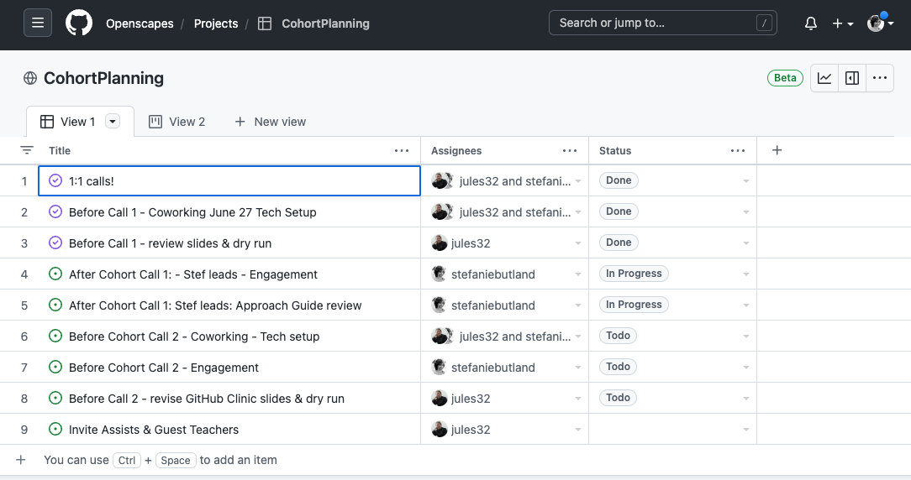
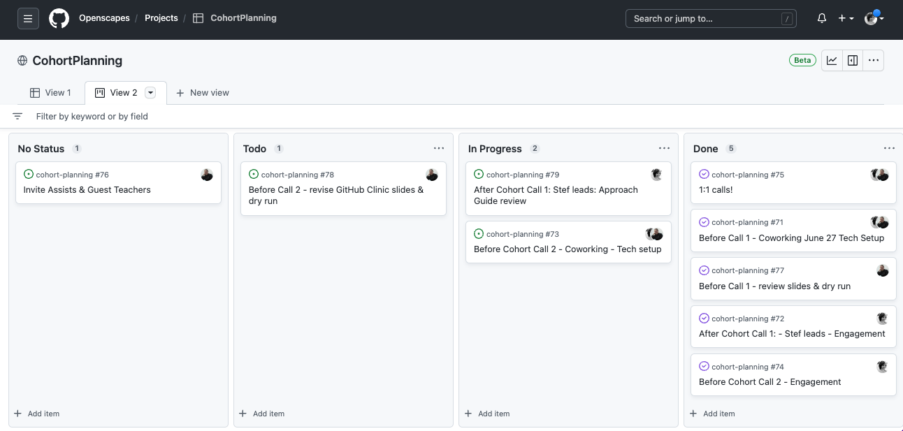
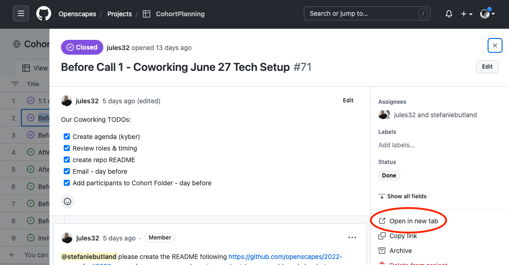

Cohort tech setup
1 Overview
Cohort tech setup involves the iterative setup of technical infrastructure for Champions Cohorts. Things described in this section begin after Pre-cohort engagement ends: after dates are set, 1:1 Intro calls are completed, and Cohort welcome email is sent. Some of this information is echoed in Leading Cohort Calls.
Most things are set up in advance of the first Cohort Call, with a few things set up following the first Call (e.g. inviting folks to Slack). We generate and review Agendas prior to each Cohort Call; they are not created all in advance.
In this page, we give some general information, then describe things in temporal order.
1.1 Project management in GitHub
We use the CohortPlanning GitHub Project to monitor and manage the many tasks involved in running Openscapes Champions Cohorts (since June 2022). The issues for this project live in the Openscapes/cohort-planning repo.
There are GitHub Issue Templates for most of the tasks. These contain checklists of tasks grouped as: Before Cohort Call 1; After Cohort Call 1; Before Cohort Call 2, etc and can be used to quickly set up Issues for new Cohorts. When opening a new issue, we’re presented with a clickable list of templates to choose from. They each open with a draft title, checklist of tasks, and one or more labels and assignees. We edit the draft issue then click Submit new issue.
These templates exist in an ISSUE_TEMPLATE folder as .md files that can be edited directly.
TODO: in each GitHub Issue Template, link to the Approach Guide section that describes the tasks.
These screenshots show two views of the same GitHub Project, as rows or as cards.


Clicking on a row (top screenshot) or on a card (bottom screenshot) takes us to details of that item, and opening in a new tab (circled in red below) would bring us to the familiar GitHub Issue view.

Prior to 2022 summer, we used a single (long) Cohort setup checklist in a GitHub issue - a precursor of our use of GitHub Projects - to manage the tasks. This is described here.
The process of setting up a Cohort is detailed in a checklist. These include technical setup in our Google Workspace and GitHub organization, and engagement with participants before and after Cohort Calls.
We can create a “Cohort Setup Checklist” GitHub Issue to help with our planning inside the Cohort GitHub repo that we just created above. The checklist tracks collective TODO’s and has “quick links” that are nice to have handy for planning and when leading Cohort Calls (the ParticipantsList is important for making team breakout rooms!).
To accomplish this, we can copy the Example Cohort Setup Checklist below. Click the “copy-to-clipboard” icon in that code block, paste it in a new GitHub issue and it will appear as a functional checklist. Manually update any links that are specific to the Cohort. Tag the planning team in the issue.
Here are examples from past Cohorts:
- https://github.com/Openscapes/2022-noaa-sefsc-summer/issues/1
- https://github.com/NASA-Openscapes/2022-nasa-champions/issues/1.
Example Cohort Setup Checklist
This issue is to help track the pre-cohort setup, following the [approach-guide](https://openscapes.github.io/approach-guide/champions/pre-cohort-engage.html#planning-document) and focused on the engagement and tech setup after dates are set.
These TODO's are for @jules32 and also will include @stefaniebutland, as well as Ady
## Quicklinks
- Planning Google Folder ([SEFSC planning](https://drive.google.com/drive/folders/1qZrhgme_tQ0LeXfRutC5YmFaWvO0H6ZJ)), includes Planning Doc that also serves for Seaside Chats and Debriefs
- \[LessonPlannning Spreadsheet\]\
- \[Cohort Folder\] - to share with Champions (a subfolder within planning folder)
- \[ParticipantsList\]
## Prep Announcement
- [ ] draft events page (https://openscapes.github.io/events)
- [ ] create google form - Ady made and internal spreadsheet
- [ ] post events page (with linked google form)
## Tech Setup for Cohort
For Cohort Planning Team (Stef, Julie, Ady)
- [ ] invite co-leads/assists to Google Calendar Cohort Calls
- [ ] GitHub:
- [ ] create GitHub repo for cohort with cohort name: eg github.com/openscapes/2022-noaa-sefsc-summer
- [ ] Make it a website: Settings \> Pages \> Source: main, dir: root
- [ ] Invite co-leads to GitHub repo with Admin permissions
- [ ] Add our Code of Conduct (kyber)
- [ ] Write Cohort info on the README (kyber)
- *Add Evaluation information upcoming*
- [ ] Add co-leads/assists to GitHub repo with maintainer permission
- [ ] create Cohort Planning Checklist Issues, tag planning team
- [ ] Google Folder:
- [ ] create Google Folder for participants: `Openscapes_CohortCalls [ 2022-noaa-sefsc-summer ]`
- [ ] add co-leads/assists to Google Folder for participants
- [ ] Data entry:
- [ ] Add Participants to database
## Adding Participants (giving access at the right time)
- [ ] Emails
- [ ] draft welcome email
- [ ] send welcome email
- [ ] send "reminder" email 1 day before, after adding participants to `Openscapes_CohortCalls [ 2022-noaa-sefsc-summer ]`
- [ ] Google Calendar:
- [ ] add participants emails to Google Calendar Invites: Cohort Calls - Do this when you send Welcome Email Email
- [ ] Google Folder:
- [ ] add participants emails to `Openscapes_CohortCalls [ 2022-noaa-sefsc-summer ]` - Do this the day before Cohort Call 1
- [ ] GitHub:
- [ ] ask participants to provide their GitHub usernames - Do this after Cohort Call 1
- [ ] add participants to GitHub repo with `kyber` - Do this before GitHub Clinic
- [ ] create GitHub Clinic files with `kyber` - Do this before GitHub Clinic
- [ ] Slack
- [ ] Add participant emails to Slack; create cohort channel - Do this after Cohort Call 1
- [ ] Google Calendar
- [ ] add participants emails to Google Calendar Invites: Co-working times (optional) - Do this after Cohort Call 11.2 kyber helps automate some setup
If you’re comfortable following instructions in R (or want to try!), we recommend using our kyber R package created by Sean Kross. kyber contains tools for setting up learning cohorts on GitHub, purpose-built for the Openscapes Champions Program. It automates creation of new GitHub repos and agendas in Google Docs for example, using information from the Cohort Registry (described below). We began using kyber in January 2022, starting with the 2022-afsc winter Cohort.
We’ll need to do some configuration to use kyber, so follow the configuration instructions before you need to use it.
Specific kyber functions will be described in more detail where relevant to specific tasks below.
2 Timing and order of tasks
Pre-cohort engagement (the preceding section) ends with a reminder to participants the day before Cohort Call 1. The “Before Call 1” tasks below must be started before that last-minute reminder.
You might notice some complementarity among this list, the GitHub Project, the Leading Cohort Calls section and Cohort Setup Checklist below. We’re capturing how we do things as our processes evolve.
2.1 Before Call 1
- Update the CohortRegistry
- Create
CohortCalendaring [ year-cohort-name ]Google sheet (copy from recent sheet) and populate with dates, session topics, guests etc - Create GitHub repo; make it a website
- Create Cohort Google Folder
- Create Google Calendar invite for Cohort Calls and optional Coworking sessions in OpenscapesEvents calendar. Add participants as guests.
- Create Call 1 Agenda (
kyber) - Email reminder to participants - day before (see Pre-cohort engagement)
- Add participants to Cohort Google Folder - day before
2.2 After Call 1
- Draft Debrief/Field Notes after every call
- Send Digest to participants via email in the week following the Cohort Call. Copy Digest to new GitHub Issue in Cohort repo (after GitHub Clinic, all digests are added as a GitHub Issue only)
- Invite participants to Slack
2.3 Before Call 2
- Host Coworking session
- Check in with Cohort Mentors
- Create Agenda for Call 2 (
kyber) - Set up GitHub Clinic (
kyber)
2.4 After Call 2 and subsequent Calls
- Call Digest as GitHub Issue
- Host Coworking session
- Create next Agenda (
kyber)
2.5 Wrap up
- Final Call Digest
- Invite Cohort to 3-month checkin
- Add songs to Spotify
- Write thank you cards; send stickers
- Blog post
- Review Approach Guide for updates
- Review debrief/field notes and incorporate feedback
3 Cohort Registry
Review the Cohort Registry and update information for the new Cohort. This might be iterative as you create the GitHub repo and Google Drive folder. The Cohort Registry Google Sheet is in suggestion mode and will be used to generate the Cohort Call Agendas using kyber. Particularly important fields for kyber:
- cohort_name: our convention is
year-shortname - date_start: in DD/MM/YYYY format
- github_repo: github repository URL (even if not yet created)
- google_drive_folder: URL
In 2021 we experimented doing this in the openscapes/cohort-planning repository and also in the Cohort repo itself. In the cohort’s repo it’s one less place for Mentors to keep track of and there is the added benefit of an example issue in the repo for the GitHub Clinic.
If you prefer to make this planning issue in the openscapes/cohort-planning repo, that is great too. Here was our original details: This repo coordinates across cohorts, so it’s best to “unwatch” except when you’re tagged and then we tag each issue with the folks involved. We’re using GitHub teams to group folks involved in each cohort and easily tag them. This way, we can all learn and coordinate across cohorts when we want to poke through the issues but aren’t cluttered with emails. Two starting Issues to make:
- “Quicklinks” Issue with links nice to have open during Cohort Calls. Example: 2022-nmfs-afsc. We pin this issue so that it shows up at the top of https://github.com/Openscapes/cohort-planning/issues
- “Pre-cohort setup: Issue with check-boxes aligned with this approach-guide so we know what’s been done. Aligning this Issue with the approach-guide is a work-in-progress. Example: 2022-nmfs-afsc
4 Google Workspace
In June 2022 we began moving our work to an Openscapes Google Workspace, starting with the 2022 NOAA SEFSC summer Cohort.
Folder organization
- OpenscapesMain > OpenscapesChampionsProgram > contains materials for active and completed Cohorts, including 1:1’s and specific Cohort Folders.
- OpenscapesMain > OpenscapesCohortPlanning > contains materials for planning Cohorts, including the Cohort Registry and docs for Mentors Seaside Chats.
Google Meet: Breakout room functionality in Google Meet is limited (e.g. participant cannot dynamically choose a room to join; host must manually assign them). We prefer to use Zoom when possible.
Google Spaces: We use Google Spaces for within-Cohort communications like Q&A and resource sharing when that is already the strongly-preferred tool for participants e.g. NOAA NMFS Mentors and Champions Cohorts. Champions are invited to Openscapes Slack to connect with the broader community.
4.1 Calendar
This information complements our CohortCalendaring GitHub Projects that lay out checklists and order of operations as GitHub Issues. Example
We use the OpenscapesEvents Calendar or other specific Google Calendar (e.g. NMFS-Openscapes, NASA-Openscapes) for Cohort Calls and Coworking sessions. This may differ for organizations that cannot use Google products and use MS Teams for example.
Here’s what to include, in this order, to create calendar invites for a cohort before finally adding participants:
- cohort name e.g. Openscapes Cohort-A Champions Calls
- description text with Champions teams as primary audience and Mentors as secondary audience.
- “Welcome! This is a Champions Cohort for NMFS Openscapes; one of three this fall.”
link to empty Cohort Google Folder
link to Cohort GitHub repo - more text later about everything a Cohort involves e.g. Cohort Calls, optional Coworking, Seaside Chats. Cohort Folder contains all Agendas, recordings, etc
- “Welcome! This is a Champions Cohort for NMFS Openscapes; one of three this fall.”
- Attach empty Cohort Folder e.g. Openscapes-CohortCalls [ cohort-name ] (create an empty one if it doesn’t already exist). Folder will ultimately contain Call Agendas, recordings, etc. (we learned in fall 2022 that folks go to Calendars to find the docs for meetings)
- Add Zoom or Google Meet link
- add Mentors’ emails as Guests, potentially using a Google Group. Mentors names and emails are in OpenscapesParticipantsMainList sheet (also in an organization-specific sheet e.g. OpenscapesParticipants [ nmfs-mentors ])
- Add Champions as Guests last. Adding them last prevents confusion from receiving multiple notifications and we know that Outlook Calendar users do not see updates in their calendars and has resulted in people having the wrong meeting link. Add as much info as you can before adding Mentors and Champions to a calendar invite.
There are limits to the number of Guests that can be added to a calendar invite. Google does not provide information on the actual limit number. Our recommended strategy is to add ~80 Guests initially, then add additional blocks of 40 Guests on subsequent days. We learned this for Cross-Cohort Coworking sessions for 4 NOAA NMFS Cohorts in Fall 2022 when we had ~160 potential participants.
Sometimes we ask people add an event to their own Google Calendar without being added explicitly as a Guest. To do this, in a Calendar Event > click the 3 dots > Publish event > choose Copy Link to event and share link in Slack or email saying “Click URL to add this to your Google Calendar”. We have used this to let people in a Cohort know of an optional impromptu session like drop-in GitHub help, or a screenshare-and-tell for example.
5 GitHub repo
Create a Cohort GitHub repo within the Openscapes GitHub organization or in the NMFS Openscapes for NOAA NMFS Cohorts (starting Fall 2022) or NASA Openscapes. This can be done with kyber as described below, or if necessary, by hand by copy-pasting a README from another cohort (we did this for the first 8 Champions cohorts!) and Code of Conduct from the Openscapes website repo.
Example repositories
- https://github.com/Openscapes/2021-noaa-nmfs
- https://github.com/nmfs-openscapes/2022-noaa-nwfsc-fall
- https://github.com/NASA-Openscapes/2023-nasa-champions
Our convention has been that the repository name is the same as the cohort_name from the Cohort Registry above, example: 2021-noaa-nmfs. To start, a Cohort repo should include a README and a Code of Conduct.
5.1 Create repo w/ kyber
To use kyber, you’ll open RStudio on your computer (instructions). In the RStudio console, install the kyber library (instructions) and follow the configuration instructions. Because kyber is under development, please re-install it each time. Browse the README to see what additional R packages you might need to install.
There’s an example workflow provided to indicate when kyber can be helpful, before or after Cohort Calls.
- To create the GitHub repository, we can copy the “Create GitHub repo” code block and paste to run in the RStudio console. Yay, repo created! Review the README for any updates you need to make by hand like updating Quicklinks.
- Now make it a website: Settings > Pages > Source: main, dir: root
- Add co-leads/assists to GitHub repo with maintainer permission
6 Cohort Google Folder
- Create a Google Folder (inside OpenscapesMain > OpenscapesChampionsProgram) for participants with the name of the cohort in brackets, e.g.
Openscapes_CohortCalls [ 2021-noaa-nmfs ]. The text inside brackets indicates who will have permission to access the folder. For a recent example - the first to use the Openscapes Google Workspace - see Openscapes_CohortCalls [ 2021-noaa-sefsc-summer]. - Add a PathwayShare folder and the Pathways Spreadsheet. We’ll encourage participants to share their team’s Pathways there.
- Add co-leads/assists to Google Folder access
6.1 Before Cohort Call 1
We will add participants’ emails to this Google Folder prior to Call 1. We’ll add Agendas here the days before each Cohort Call. The idea is to avoid overloading people with information - give folks access at the right time.
7 Data entry
We keep participants lists in two Google Sheets. One is an overarching list of everyone who has ever participated as a Champion or Mentor (OpenscapesMain > OpenscapesParticipantsMainList) and one is for each Cohort and is visible to all members of the Cohort (these example path/names don’t actually exist; just providing an example to follow: OpenscapesMain > OpenscapesChampionsProgram > Openscapes_CohortCalls [ 2021-noaa-nmfs ] > OpenscapesParticipants [ 2021-noaa-nmfs ] ). During Cohorts we use the cohort sheet to have people add their GitHub username asynchronously so we can set up the GitHub Clinics.
As teams form, we:
- Update database with who is in which cohort
- Google Folder Permission: Add all Cohort emails (note: some participants will provide a gmail address if their university or work email isn’t gmail; add this address as well)
8 Cohort Call Agendas
We do this in the days before each Cohort Call so that we can draw from a set curriculum but also adapt/refine based on what we hear from participants during Cohort Calls, Co-working, Slack, etc.
We recommend using our kyber R package created by Sean Kross. kyber automates Agenda creation that we can then paste into Google Docs and make any further modifications. You can also do this “by hand” by copy-pasting files from other cohorts if you prefer (we did this for the first few Champions cohorts - see Historical aside below for those instructions).
8.1 Create agendas w/ kyber
You’ll do the following:
- Generate an Agenda markdown file with kyber
- Knit to html and copy-paste into a Google Doc in your Cohort Google Folder
- Change fonts/etc and make any additional modifications
You do this from RStudio, within the Cohort repository (example 2022-noaa-afsc). Make sure you pull before starting in case there are any updates you don’t have locally.
Copy the “Agendas” code block, edit Call details and paste in the console. After knitting and pasting the html in a new Google Doc, edit the formatting as listed in kyber README.
Getting errors? See troubleshooting documentation.
Blank agendas are in a public Google Folder. Before each Cohort Call, we:
- Make a copy
- Save it in the Cohort Google Folder
- Edit dates, times, add Google Folder links and Zoom links
- Review and tailor for Cohort and Facilitator (including Land Acknowledgement)
We usually do this before each Cohort Call (as opposed to all at once at the beginning) as a way for us to review/prepare for each Cohort Call and so to reduce confusion for participants.
9 Slack
Our use of Slack is outlined in Tooling
After the first Cohort Call, we:
- Create a private Slack channel for the cohort, called [ year-cohort-name ]
- Invite Cohort to join Slack
- In Digest of Cohort Call 01 say, You’ll soon receive an invitation to join Openscapes Slack. Here’s some information in our Approach Guide to help you get comfortable.
- Inside Slack > Openscapes > Invite people to Openscapes > Customize your invitation > in Channels, add private channel > add list of email addresses. Invite as Member.
- note: Custom invitation messages are limited to 560 characters and do not allow urls
- So far, we find that sending the invite from inside Slack is preferable to creating an invitation link that gets sent in a separate email.
- Write a welcome message in the #general channel:
Hi Everyone - We have a new Champions Cohort that started today and we just added them to slack! They may say hello here too :wave: Here is their [ cohort repo ] with a few more details.
10 GitHub Clinics
GitHub Clinics are part of the Cohort Calls. They require at least two team members.
In 2021 we experimented having GitHub Clinics as stand-alone events between Cohort Calls 1 and 2, offering them twice, as well as the recording as part of team’s Seaside Chats. In some Cohorts it was difficult for participants to make extra time outside of the Cohort Calls, and it was extra scheduling for everyone. In 2022 we reinstated the GitHub Clinic into Cohort Call 2, and increased the number of Cohort Calls to 5.
10.1 Overview
Julie recorded videos of her teaching the GitHub Clinic to enable others to teach it. These are linked in the Openscapes Lesson Series book.
During the Clinic, the Tech Host will make breakout groups, either based on their actual research team or as a random breakout group, depending on whether they attend with their team. We use the Cohort’s ParticipantsList spreadsheet to assist with identifying teams, and we may ask people to rename themselves in Zoom to identify their team.
The Facilitator leads the agenda, and Teacher talks through the slides and screenshares (more recently we do not screenshare slides after Cohort Call 1; we do screenshare the live demos in the GitHub Clinic).
Team members can also circulate in the breakout rooms to check in, help, and share.
Preparing for the GitHub Clinic involves:
- technical setup with
kyber - reviewing the slides and live demos
10.2 Technical setup with kyber
To set up GitHub Clinics, we recommend using the kyber R package created by Sean Kross. kyber automates adding participants’ GitHub usernames to a Team that can write to the GitHub repo, and creates a set of markdown files such that each person has their own name.md to play around in. You can also do this “by hand” at github.com and copy-paste files from other cohorts if you prefer (we did this for the first few Champions cohorts!). Also, setting up with GitHub Clinic is not Openscapes-specific so you don’t need to be leading an Openscapes event to use kyber!
Before the GitHub Clinic, we ask people to create a GitHub account and share their username with us - as part of their task following the previous Cohort Call. 1-2 days before the Clinic we email a reminder for folks to share their username with us.
subject: Openscapes - your GitHub username for Call 02
Hi All,
We’re looking forward to the GitHub Clinic on Wednesday for Cohort Call 02! We will be adding you all to a [year-cohort-name-cohort] GitHub Team so that you can participate. Please share your GitHub username today if possible.
Add your GitHub username to the Cohort_ParticipantList [ year-cohort-name ] spreadsheet in our Cohort Folder, column F. Creating a GitHub account for the first time? Here’s some username advice.
No prior knowledge needed for the Clinic!
Cheers, Stef
From RStudio, within the Cohort repository (example 2022-noaa-afsc), follow kyber Github Clinic instructions. Make sure you pull before starting in case there are any updates you don’t have locally. You might be prompted to install some other R packages called by kyber.
To prepare for the Clinic, we do the following:
- Add all usernames with member privileges to a GitHub Team titled like
2022-noaa-afsc-cohort - Give the Team access to the Cohort repo
- Create each person’s
name.mdfiles